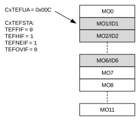
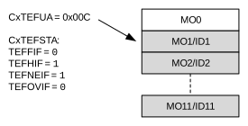
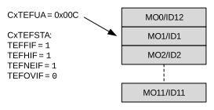
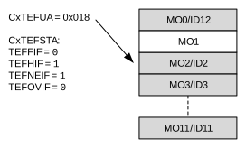

C1TEFCONL and C1TEFCONH are used to control the TEF. C1TEFSTA contains the status flags. C1TEFUAL and C1TEFUAH contain the user address of the next message object to read.
The actual RAM address is calculated using Equation 38-21.
Figure 38-38 through Figure 38-45 illustrate how the status flags and user address are updated. The TEF stores transmitted messages; therefore, the flags behave similarly to an RX FIFO.
Figure 38-38 shows the status of the TEF after Reset. Message objects, MO0 to MO11, are empty. All status flags are cleared. The user address points to MO0.
Figure Figure 38-39 shows the status of the TEF after the first transmit message is stored. MO0 contains ID0, the ID of MSG0. TEFNEIF is set since the TEF is not empty. The user address points to MO0.
Figure 38-40 illustrates the status of the TEF after ID0 is read. The user application reads the ID from RAM and sets the UINC bit (C1TEFCONL[8]). The user address increments and points to MO1. The TEF is empty again. All flags are cleared.
Figure 38-41 illustrates the status of the TEF after six more messages are transmitted: MSG1-MSG6. The user address points to MO1. TEFNEIF and TEFHIF are set because the TEF is now half full.

Figure 38-42 illustrates the status of the TEF after five more messages are transmitted: MSG7-MSG11. The user address still points to MO1. TEFNEIF and TEFHIF are set.

Figure 38-43 illustrates the status of the TEF after one more message is transmitted: MSG12. All status flags are set because the TEF is full. The user address points to MO1.

Figure 38-44 illustrates the status of the TEF after one more message is transmitted. Since the TEF is already full, an overflow occurs. The ID is discarded and TEFOVIF is set. The user address remains unchanged.
Figure 38-45 illustrates the status of the TEF after the application cleared TEFOVIF and read one more message. TEFFIF is clear because the TEF is not full anymore. The user address points to MO2.
